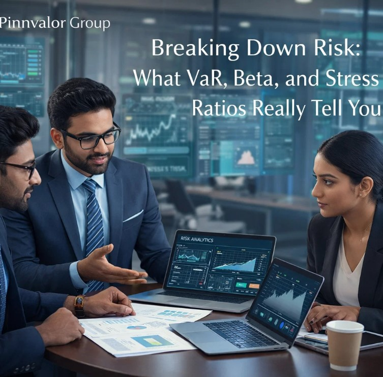

Breaking Down Risk: What VaR, Beta, and Stress Ratios Really Tell You
In today’s volatile financial landscape, understanding risk is no longer optional—it’s essential. Whether you're an investor, financial analyst, or business leader, the ability to measure and interpret risk can mean the difference between sustainable growth and unexpected losses.
How well do you really understand the risks behind your returns?
True financial strength lies not in avoiding risk— but in understanding, measuring, and managing it effectively.
Among the most widely used tools for quantifying risk are Value at Risk (VaR), Beta, and Stress Ratios. While these metrics are often discussed individually, their true power lies in how they complement each other to provide a comprehensive risk perspective.
1. Value at Risk (VaR): Measuring Potential Loss
Value at Risk (VaR) answers a critical question:
“What is the maximum loss I can expect over a specific time period at a given confidence level?”
How It Works
- A 1-day VaR of ₹10 lakh at 95% confidence means there is a 5% chance the loss will exceed ₹10 lakh in one day.
Key Approaches
- Historical Method – Based on past data trends
- Variance-Covariance Method – Assumes normal distribution
- Monte Carlo Simulation – Uses multiple random scenarios
Why It Matters
- Helps in risk quantification
- Widely used by banks and financial institutions
- Assists in capital allocation and regulatory compliance
Limitations
- Assumes normal market conditions
- Fails to capture extreme events (tail risk)
- Can underestimate risk during crises
2. Beta: Understanding Market Sensitivity
Beta (β) measures how sensitive an asset is to overall market movements.
Interpretation
- β = 1 → Moves in line with the market
- β > 1 → More volatile than the market
- β < 1 → Less volatile than the market
- β < 0 → Moves opposite to the market
Example
- If a stock has a Beta of 1.5, it may rise 15% when the market rises 10%, and fall 15% when the market falls 10%.
Why It Matters
- Helps in portfolio diversification
- Essential for Capital Asset Pricing Model (CAPM)
- Aligns risk with return expectations
Limitations
- Based on historical data
- Assumes stable market relationships
- Ignores company-specific risks

3. Stress Ratios: Preparing for the Worst
Stress Ratios evaluate how a portfolio performs under extreme market conditions.
Types of Stress Testing
- Scenario Analysis – Simulating events like financial crises
- Sensitivity Analysis – Changing one variable at a time
- Reverse Stress Testing – Identifying breaking points
Why It Matters
- Identifies hidden vulnerabilities
- Enhances risk preparedness
- Supports regulatory and enterprise risk management
Limitations
- Depends on assumptions
- Not all extreme events can be predicted
- Can be subjective
4. Putting It All Together: A Holistic Risk View
- VaR – “How much can I lose?”
- Beta – “How does it move with the market?”
- Stress Ratios – “What happens in a crisis?”
Together, these metrics provide a 360-degree view of risk, helping investors and organizations make better decisions.
5. Real-World Application
- Build resilient portfolios
- Optimize risk-return trade-offs
- Meet regulatory requirements
- Enhance strategic decision-making
For example, a portfolio with low VaR but high Beta may still carry significant risk in volatile markets, while strong stress test results can provide additional confidence.
6. Final Thoughts: From Measurement to Strategy
Risk metrics are not just numbers—they are powerful decision-making tools. Relying on a single metric can create blind spots, but combining VaR, Beta, and Stress Ratios enables a deeper understanding of risk exposure and preparedness.
In an era of uncertainty, success lies not in avoiding risk, but in understanding, measuring, and managing it effectively.
Key Takeaway
“Risk isn’t just about what you can lose today—it’s about how prepared you are for tomorrow.”